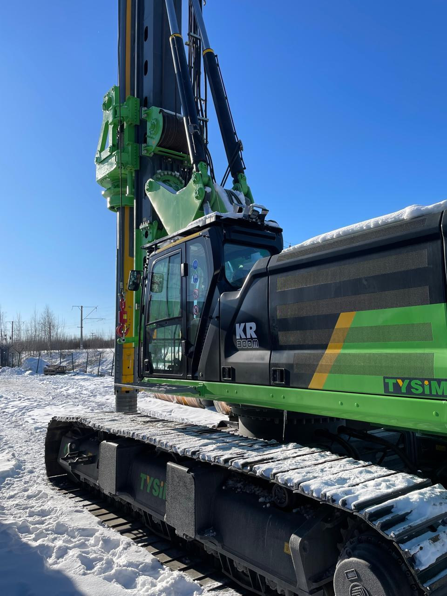
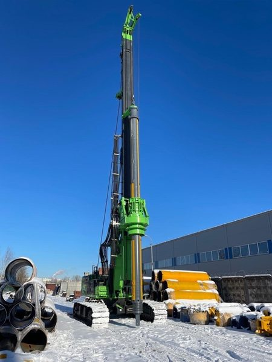
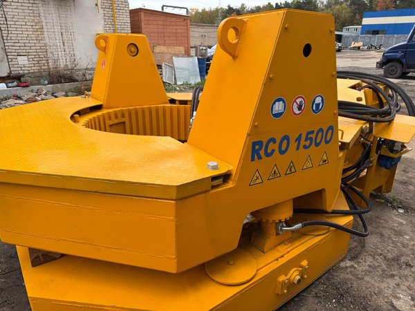
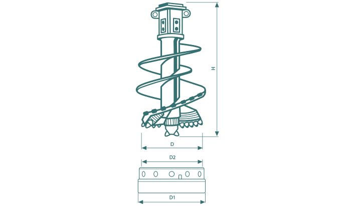
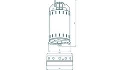
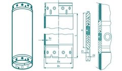
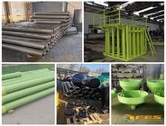
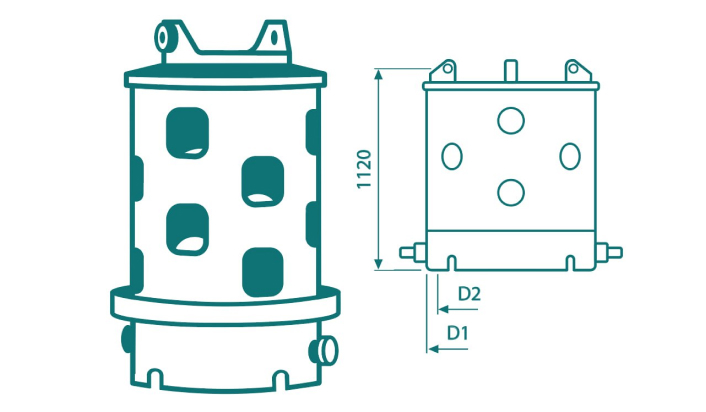
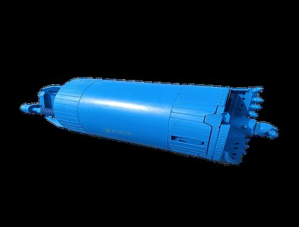

Работа в экстремальных климатических условиях, полная сертификация ЕАС, склад в Санкт-Петербурге. Не коробка из Китая — машина, готовая к работе с первого дня.

Не просто станок — готовый к работе комплекс с сертификацией и поддержкой
32 т крутящий под нагрузкой · 54 м глубина · 2 500 мм диаметр · 90 тонн · CAT C9.3B · CAT 345GC · 0 м/ч
Электрогидравлика. Лебёдки pull down 32 т. AI-ассистент. Русское меню. Дистанционный мониторинг.
Собственная разработка. Ø до 1 500 мм · 1 500 кН·м · 1 000 кН · 350 бар. 10+ установок в РФ. Гарантия 1 год.
ТР ТС 010/2011 и 020/2011. ПСМ получен. Декларация. Пожарная безопасность. На объект сразу.
Склад в СПб. Выезд инженера за 48 ч. Обучение операторов. Гарантия 1 год / 2 000 ч.
Не «коробочное решение» — машина, готовая к суровым условиям эксплуатации с первого дня
Заводской монтаж. Запуск в любой мороз.
Два аккумулятора. Пуск в любой мороз.
Работа с первой минуты без прогрева.
Усиленная обработка. Полная герметизация.
Сертификация. Можно сразу на объект.
Опыт Casagrande (Италия). Точный подбор.
Поставим машину, готовую к работе в Российских условиях — с первого дня. Адаптация, сертификация, сервис — всё включено в цену. Так работают профессионалы.
Более 25 лет работаем с ведущими мировыми производителями буровой техники. Поставляем оборудование, адаптированное под Российский климат и условия эксплуатации.
Более 25 лет мы сотрудничаем с крупнейшими производителями бурового оборудования — итальянской Casagrande (мировой лидер в производстве буровых установок и фундаментной техники), китайской TYSIM Machinery (официальный дистрибьютор в России, завод — партнёр Caterpillar), а также ведущими европейскими и азиатскими производителями бурового инструмента и оснастки. За годы работы сформировали глубокое понимание рынка, технологий и требований Российских заказчиков.
Каждая единица техники проходит полный цикл адаптации к суровым условиям: предпусковой подогреватель Webasto, усиленные АКБ 220 А·ч, обогрев гидравлической системы с работой без предварительного прогрева, антикоррозионная защита IP65, полная сертификация ЕАС с получением ПСМ. Машина поступает заказчику готовой к работе с первого дня — без доработок и согласований.
В штате — инженеры с многолетним опытом эксплуатации и сервиса буровой техники Casagrande, TYSIM, SANY, XCMG и других производителей. Мы плотно взаимодействуем с инженерными службами заводов-изготовителей, участвуем в разработке решений под специфику конкретных проектов, обеспечиваем техническое сопровождение на всех этапах — от подбора до ввода в эксплуатацию.
Подбор оборудования под геологию и бюджет · Прямые поставки с заводов (КНР, Европа) · Таможенное оформление «под ключ» · Сертификация ЕАС, ТР ТС, ПСМ · Адаптация к экстремальным условиям с заводским Webasto · Доставка до объекта по РФ · Шеф-монтаж и пусконаладка · Обучение операторов (3 дня на объекте) · Гарантия 1 год / 2 000 моточасов · Склад запчастей в Санкт-Петербурге · Выезд сервисного инженера за 48 часов по всей РФ
Единственный китайский производитель с оригинальными двигателями Caterpillar и полным циклом адаптации
TYSIM KR300M — крутящий момент 32 тонны под нагрузкой, лебёдки pull down 32 тонны. Единственный китайский производитель буровых установок, использующий оригинальные двигатели Caterpillar. Каждая машина проходит полный цикл адаптации под Российские условия: Webasto, усиленные АКБ, обогрев гидравлики, антикор, сертификация ЕАС с получением ПСМ. Машина в наличии в Санкт-Петербурге.
📱 Русифицированная система управления
Полностью переведённый интерфейс: меню, диагностика, журнал ошибок — всё на русском языке. Не требуется знание китайского или английского для работы.
🤖 Бортовой AI-помощник
Программный комплекс на базе искусственного интеллекта помогает оператору: подсказывает оптимальные режимы бурения по геологии, предупреждает о нештатных ситуациях, анализирует нагрузку и даёт рекомендации. Снижает влияние человеческого фактора и упрощает ввод в эксплуатацию новых операторов.
📡 Дистанционный мониторинг всех систем
Удалённый доступ к параметрам машины в реальном времени: нагрузка на двигатель, гидравлика, крутящий момент, глубина бурения, расход топлива, геопозиция. Автоматическое оповещение сервисной службы при отклонении параметров. История работы за весь период эксплуатации — данные доступны через веб-портал и мобильное приложение. Позволяет контролировать парк техники из одного окна, независимо от удалённости объектов.
📋 Загрузка проектной документации
В бортовую систему загружается проектная документация: геологические разрезы, схемы свайного поля, чертежи фундамента, техническая документация проекта. Система автоматически сопоставляет фактические параметры бурения с проектными, контролирует соответствие глубины, диаметра и вертикальности скважин проектным значениям. При отклонениях — сигнал оператору и запись в журнал. По окончании работ формируется исполнительная документация: акты скрытых работ, фактические профили скважин, отчёт по каждой свае.
Caterpillar C9.3B
Не китайский лицензионный —
оригинальный двигатель CAT
Webasto · АКБ 220 Ач
Обогрев гидравлики
Антикор IP65
ТР ТС 010/2011 и 020/2011
ПСМ получен · На объект сразу
Склад в СПб · Выезд 48 ч
Обучение операторов
Гарантия 1 год / 2 000 ч
В стоимость поставки TYSIM KR300M включено:
Роторные буровые · Обсадные столы · Буровой инструмент








10+ обсадных столов RCO1500 на реальных объектах по всей России
Машина в Санкт-Петербурге. Приезжайте смотреть лично — заводим, показываем, тестируем.